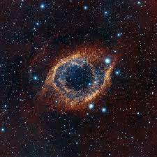

Regarding the universe, extravagance is often appreciated: the immensity and glimmer of the cosmos, the rarity of gold created from the death of massive stars,the light that permeates our night sky allowing for a glimpse into graveyard of solar systems.
However, with some mild diligence, we can see the remarkable beauty in the mundane:
the similarities between our eyes and a helix nebula, the evolution of molecules binding eventually allowing acetylcholine to fire in our brains enabling our body to dance, and the cyanobacteria that densified the atmosphere with oxygen allowing the development of the life we see all around us today.
